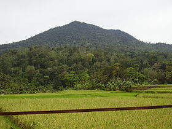
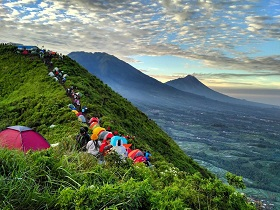
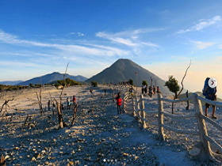
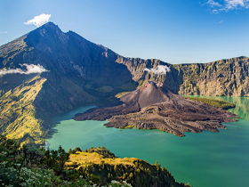
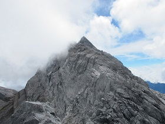
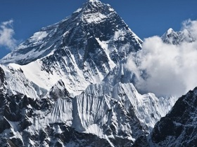

Pulosari
(1.346 mdpl)

Siapa yang tidak tahu keberadaan Gunung Pulosari yang sudah hitz dikalangan pendaki area Banten raya. Walau belum pernah mengalami erupsi status gunung ini adalah gunung aktif dimana terdapat kawah yang menunjukkan aktifitas gunung Pulosari.
Read More
Andong
(1.762 mdpl)

Ingin menjajal sensasi naik gunung tanpa perlu berkemah atau tetap bisa update di media sosial?
Datanglah ke Gunung Andong, yang berada di Magelang, Jawa Tengah.
Read More
Papandayan
(2.665 mdpl)

Ingin menjajal sensasi naik gunung tanpa perlu berkemah atau tetap bisa update di media sosial?
Datanglah ke Gunung Andong, yang berada di Magelang, Jawa Tengah.
Read More
Rinjani
(3.726 mdpl)

Belum mantap memutuskan untuk mendaki Rinjani atau tidak? Mantapkan sekarang! Jangan sampai menyesal telah melewatkan Rinjani.
Read More
Yamin
(4.595 mdpl)

Jarang mendengar nama gunung ini, ternyata Gunung Yamin merupakan salah satu gunung tertinggi yang ada di Indonesia. Berani Coba?
Read More
Cartenzs Pyramid
(4.884 mdpl)

Lebih dikenal dengan Puncak Jaya Wijaya, gunung ini sangat tidak direkomendasikan bagi kamu para pemula.
Read More